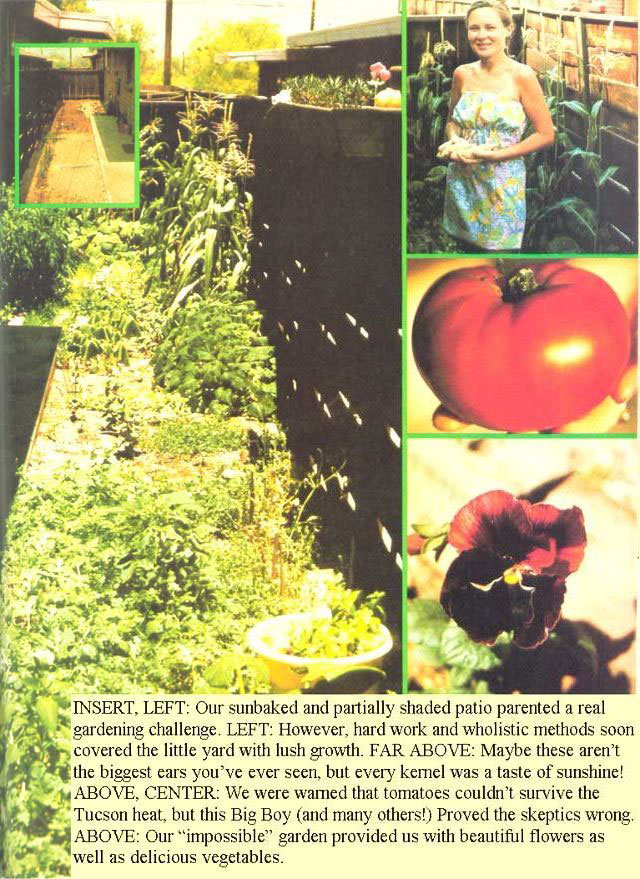

REFORT FROM THEM THATS DOIN'
When we moved to Tucson, Arizona from a big city in the Northeast, we were delighted to find an apartment with a patio . . . even though that plot was just a narrow rectangle of barren adobe clay! We weren't discouraged, either, by the fact that the area had little rainfall, or that the temperatures ranged between 100° and 110° from June until October. After six years of a single plant on a city windowsill and "Keep Off" signs on every available patch of grass, we saw-in this arid little plot of dirt-a great potential for vegetables, flowers, and relaxation . . . and we were right!
Unfortunately, our new patio was small (15 by 29 feet), and nearly a quarter of its total area was paved with concrete. The usable space was reduced further, too, because we had to leave an access path to the electric meter at the plot's far end.
In addition to the space problems, we discovered that-since the "yard" was flanked on three sides by a high wooden fence and by an apartment building on the fourth-our prospective garden would receive only a few hours of sun a day. (And that desert sun seemed more likely to burn delicate seedlings than to nourish them!)
But we were undeterred, and-although neither Jack nor I was familiar with organic gardening methods-we knew we didn't want to use any of the chemicals and pesticides that had been a part of our previous gardens. So, with wholistically grown flowers and vegetables in mind, we set to work under an already hot February sky.
The "native flora" on our tiny patio's parched soil consisted of a few especially stubborn weeds, which I pulled up and stuffed into the open spaces under the fence to form a crude retaining wall (I hoped this "dike" would help keep desperately needed water in the garden where it "belonged"). Once that was done, my husband and I outlined a path to the meter with discarded bricks, and-using a borrowed shovel-dug up the rest of the adobe to a depth of eight or ten inches ... a truly backbreaking and blistering job.
To our surprise, we found the soil was rich . . . but it packed down quickly. In order to keep our sunbaked earth loose, we mixed in 10 cubic feet of redwood mulch and four cubic feet of peat moss. And-where the patio sloped up to the far-back corner-Jack and I built terraces with small clay walls to help hold the precious, life-giving water.
Everything was ready for planting by the first week in March, and-after some careful consideration-we chose the space between the path and the house (an area that received direct sunlight from 10:00 a.m. till noon) to grow six Big Boy hybrid tomato seedlings. Then, we bordered those crossbreeds with a few mint sprigs and some purple and blue violets ... to remind us of New England springs.
The very back corner of the patio was sunny from noon until 3:00 p.m., so that became our "cornfield" (two seeds to a hill ... 15 inches apart, and three rows deep). Four mounds of yellow squash, two rows of beets, and a patch of lettuce and parsley rounded out our vegetable section. Near the end of the yard, we established a little plot of pansies and marigolds . . .surrounded with water-saving dikes. White clover provided ground cover over the remaining barren spots, and would serve to replenish the soil's nitrogen at the same time.
Our Arizona yard didn't have room for a compost pile, but-as the plants grew-we mulched them with clippings from the apartment lawns, plus vegetable and fruit peels, coffee grounds, tea leaves, and so forth from our kitchen. This waste soon crumbled in the desert sun and was mixed into the dirt . . . causing no odor or pest problems in the process.
We also poured our dish- and wash-water into the garden to help reduce the amount of irrigation necessary. And-though Jack or I still had to soak the soil thoroughly three times a week-our series of little dikes and canals reduced the runoff and captured every possible drop of precious moisture during the rare Tucson rain showers.
Surprisingly, insects didn't prove to be a problem for us at all. We simply washed the occasional aphids off our plants with soapy dishwater, squashed the inchworms, and snipped tomato worms in two with shears. Our bug control program was, however, simplified . . . thanks greatly to a number of praying mantises and lizards who took up residence on the patio.
Although our desert city garden didn't provide Jack and me with all the vegetables we needed ... we were more than happy with our results. Tomatoes (we were told) can't thrive in such heat . . . yet we harvested over 75 juicy, red fruits. And the parsley and mint were so profuse that we dried some for winter use! Our corn yielded a couple of sweet ears per plant in early June (the stalks were then pulled up and zinnias planted in the reopened space). The lettuce lasted until late June, when the blistering Arizona summer heat finally killed it. But our squash mounds produced abundantly throughout the hot weather, and we were still eating from our beets well into the winter.
In addition to the fresh vegetables, our patio also provided us with many lovely flowers. The violets bloomed early in the spring . . . the pansies from March to late June . . . and the marigolds and zinnias from early June until late fall. By the time the pansies had finished flowering, seeds (sunflower, millet, kafir, corn, etc.) that our feathered friends had scattered from the bird feeder were already up and growing. As these matured, we were able to enjoy the antics of various finches as they fed from the tops of swaying stalks.
When the plants died or finished bearing, we pulled them up and returned them to the soil. And-during the following winter-we continued to add organic matter from the kitchen, plus a little dried manure. Then, the following spring, we dug more peat moss into the soil . . . and discovered that a minor miracle had occurred!
You see, when we began our garden not a single earthworm could be found in the dry, bricklike ground, but-just 12 months later-every shovelful of soil was rich with the squirming, helpful, little creatures . . . and, thanks to these natural composters, our second garden was even more lush and productive than the first had been!
As a result of our success, Jack and I (who, as I've said, are both former pesticide-and-chemical-fertilizer gardeners) have become zealous converts to- and advocates of-organic gardening methods. After all, we proved for ourselves that it isn't impossible (or even especially difficult!) to grow food and flowers right smack in the middle of the Sonoran desert! Of course, our methods are still crude, but we're having a ball while we learn . . . and in the meantime, our household is eating" better than ever!
|
 |
|
|